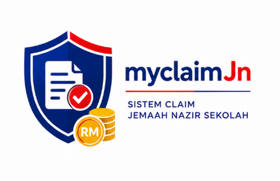
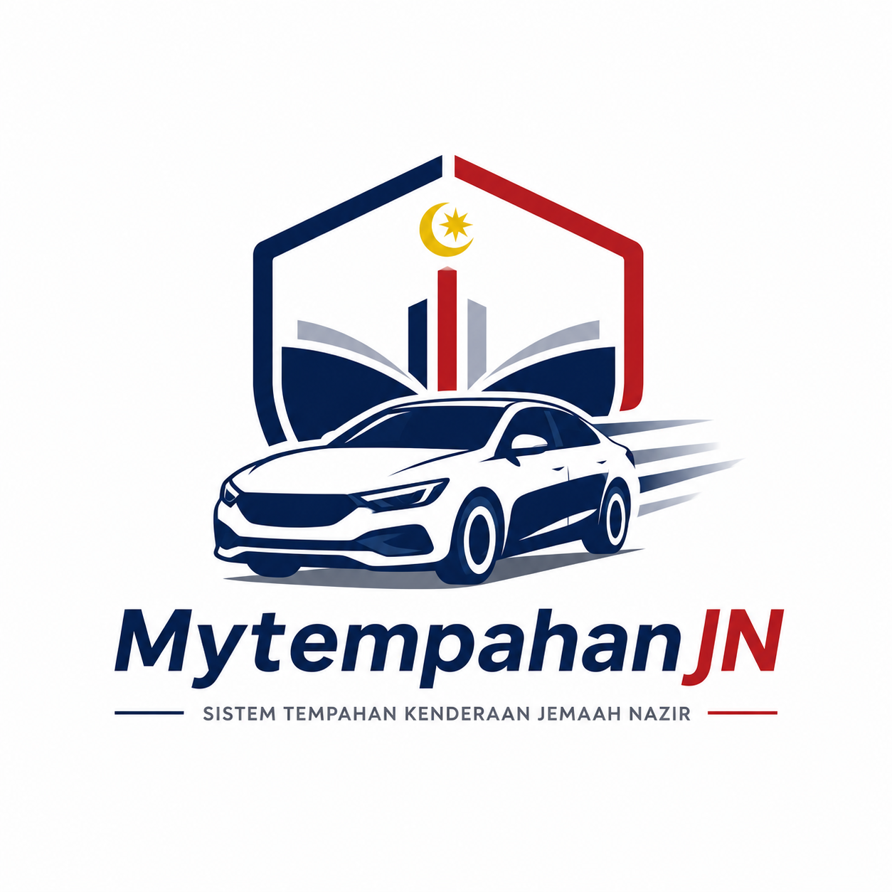
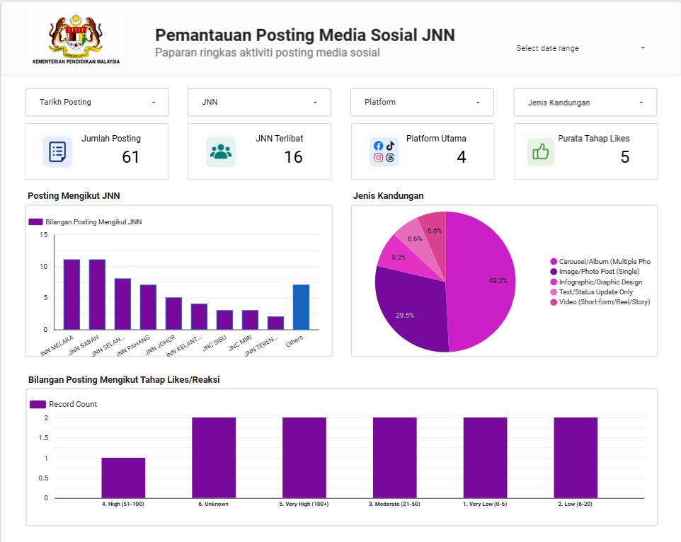
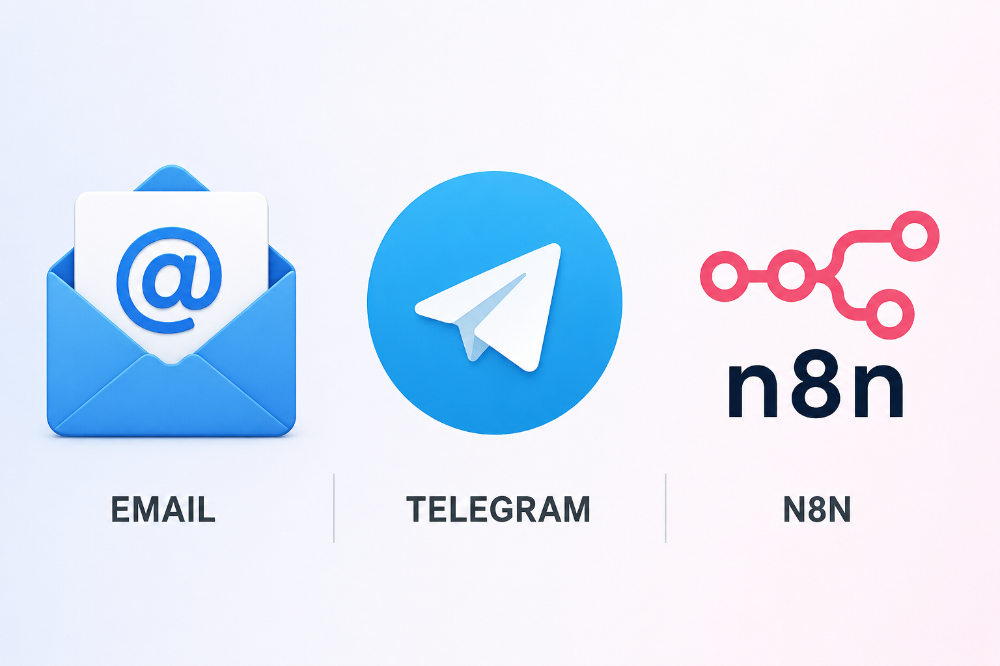
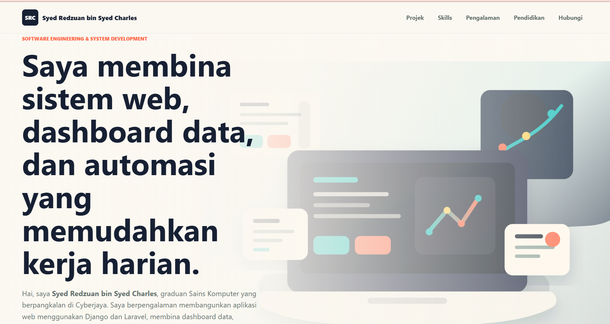

Saya membina sistem web, dashboard data, dan automasi yang memudahkan kerja harian.
Hai, saya Syed Redzuan bin Syed Charles, graduan Sains
Komputer yang berpangkalan di Cyberjaya. Saya berpengalaman membangunkan
aplikasi web menggunakan Django dan Laravel, membina dashboard data,
melaksanakan integrasi API, serta menghasilkan workflow automasi untuk
mendigitalkan proses manual dan meningkatkan kecekapan operasi.
Projek sebenar daripada pengalaman sistem, dashboard, dan automasi.
Django Stack

Django System
e-Nazir MyClaim System
Sistem tuntutan elaun dan pemantauan bajet untuk mendigitalkan proses claim manual di Jemaah Nazir.
DjangoBootstrap 5Chart.js
Laravel Stack

Laravel App
Sistem Tempahan Kenderaan JN
Aplikasi tempahan kenderaan dengan Google OAuth, kelulusan admin, assignment pemandu, laporan, dan audit log.
LaravelSupabaseRBAC
Data Dashboard

Data Dashboard
Social Media Monitoring Dashboard
Dashboard Looker Studio untuk memantau posting JNN/JNC, platform, jenis kandungan, dan tahap engagement.
Looker StudioGoogle SheetsReporting
Workflow Automation

Automation
Email-to-Telegram Notification
Workflow n8n yang memantau Gmail melalui IMAP dan menghantar notifikasi Telegram secara real-time.
n8nGmail IMAPTelegram API
Vercel Deployment

Portfolio Deployment
Personal Portfolio Website
Deployed a static portfolio website using GitHub and Vercel with automatic deployment triggered by Git commits.
GitHubVercelCI/CD
Kemahiran
Gabungan development, data, automation, dan support.
Fokus saya ialah membina sistem yang boleh digunakan oleh organisasi:
ada aliran kerja jelas, data yang boleh dipantau, dokumentasi, dan deployment
yang praktikal.
01
Programming & Web
Python, JavaScript, PHP, Java, HTML, CSS, Bootstrap, React, Blade, and Google Apps Script.
Power BI, Google Looker Studio, Chart.js, data validation, dashboarding, troubleshooting, Windows and Linux administration.
Perjalanan
Pengalaman
Jemaah Nazir, Ministry of Education Malaysia
Software Engineering & System Development contract role. Built JN Vehicle Booking System, e-Nazir MyClaim, Looker Studio dashboard, and n8n email-to-Telegram automation. Also supported QA/UAT, documentation, debugging, and internal portal development.
Department of Statistics Malaysia (DOSM)
Personnel MySTEP E9. Prepared, cleaned, and validated economic and tourism datasets, developed Power BI visualisations, supported analytical reports, and provided Level 1 IT support.
Malaysia Digital Economy Corporation (MDEC)
IT Application Development intern under Digital Talent & Entrepreneurship. Built responsive OutSystems interfaces, managed user databases, automated testing with Selenium, and delivered reports and dashboards.
Sigma Rectrix Systems (M) Sdn Bhd
Networking & Systems Support intern. Assisted troubleshooting, computer and network maintenance, RJ45 cabling, performance monitoring, backup support, and IT documentation.
Education
Pendidikan & bahasa
Universiti Teknologi MARA (UiTM)
Bachelor of Computer Science, CGPA 3.22
Sept 2021 - Jan 2025
Universiti Poly-Tech MARA (UPTM)
Diploma in Computer Science, CGPA 3.06
Sept 2017 - Jan 2020
Languages
Malay - Native, English - Intermediate, Tagalog - Intermediate
MUET Band 3
Contact
Jom bincang peluang kerja atau projek.
Saya berpangkalan di Cyberjaya, Selangor dan terbuka untuk peluang software
development, dashboarding, automation, dan IT systems support.